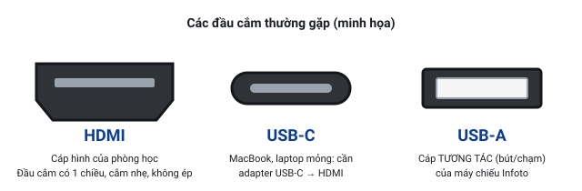
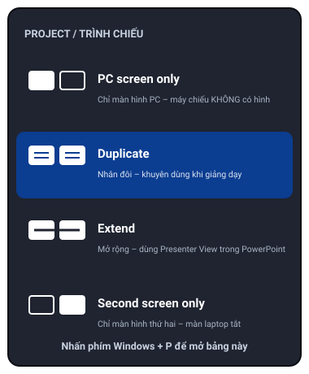

Kết nối laptop với máy chiếu
Tất cả phòng học dùng cáp HDMI. Laptop Windows thường có sẵn cổng HDMI; MacBook và laptop mỏng cần adapter USB-C → HDMI (nên mang theo adapter riêng).
1. Chuẩn bị và thứ tự cắm

- Bật máy chiếu trước, đợi đèn báo xanh ổn định (30–60 giây).
- Chọn nguồn HDMI trên máy chiếu đúng cổng đang cắm dây (nút Input / Source trên remote).
- Cắm cáp HDMI vào laptop (MacBook: cắm adapter vào laptop trước, rồi cắm HDMI vào adapter). Cắm chặt cả hai đầu.
- Đợi 5–10 giây. Thường màn hình laptop chớp một cái và hình xuất hiện trên máy chiếu.
- Chưa có hình → Windows nhấn Win + P chọn Duplicate; macOS bật Mirror (xem bên dưới).
- Máy chiếu tương tác Infoto: cắm thêm dây USB tương tác vào laptop (hướng dẫn).
Nên mang theo
Adapter riêng (USB-C → HDMI cho MacBook / laptop mỏng), sạc laptop, và USB chứa bài giảng dự phòng để dùng máy tính của phòng hoặc laptop mượn.
2. Windows 10 / 11: phím Win + P

| Chế độ | Máy chiếu hiện gì | Khi nào dùng |
|---|---|---|
| PC screen only Chỉ màn hình PC | Không có hình | Không dùng khi dạy |
| Duplicate Nhân đôi | Giống hệt màn laptop | Khuyên dùng. Đơn giản, thấy gì chiếu nấy; bắt buộc với máy chiếu tương tác |
| Extend Mở rộng | Là màn hình thứ hai, nội dung khác màn laptop | Muốn xem ghi chú (Presenter View) trong PowerPoint mà lớp không thấy |
| Second screen only Chỉ màn hình thứ hai | Có hình, màn laptop tắt | Ít dùng; dễ "mất" cửa sổ |
Không chắc? Chọn Duplicate.
Đây là chế độ an toàn nhất: laptop và máy chiếu luôn giống nhau.
Nếu Win + P không có tác dụng
- Mở Settings (Win + I) → System → Display → mục Multiple displays → nhấn Detect.
- Nhấn Win + Ctrl + Shift + B (khởi động lại card đồ họa, màn hình chớp và kêu bíp – bình thường).
- Rút cáp HDMI, đợi 5 giây, cắm lại. Thử cổng / adapter khác. Cuối cùng khởi động lại laptop.
- Chi tiết: mục 10 – Laptop không nhận màn hình thứ 2.
3. Dùng Extend để xem ghi chú (Presenter View) trong PowerPoint
Với Extend, máy chiếu là màn hình thứ hai: lớp thấy slide, còn bạn thấy ghi chú, đồng hồ và slide kế tiếp trên laptop.
- Nhấn Win + P → chọn Extend. Đợi 5 giây.
- Mở PowerPoint → thẻ Slide Show → tích Use Presenter View. Ở ô Monitor, chọn màn hình máy chiếu (thường là Monitor 2 hoặc Automatic).
- Nhấn F5 để trình chiếu từ đầu (Shift + F5 từ slide hiện tại).
- Nếu ghi chú lại hiện trên máy chiếu còn slide trên laptop: trong Presenter View nhấn Display Settings → Swap Presenter View and Slide Show.
- Muốn kéo một cửa sổ (video, trình duyệt) sang máy chiếu: nhấn Win + Shift + → (hoặc ←).
Lưu ý: Ở chế độ Extend, thứ gì mở trên laptop lớp không thấy cho đến khi bạn kéo sang. Không quen thì nên dùng Duplicate và nhấn Alt + F5 để xem thử Presenter View trước buổi dạy. Máy chiếu tương tác (Infoto) nên dùng Duplicate để chạm đúng vị trí.
4. macOS (MacBook)
- Adapter: MacBook chỉ có cổng USB-C (Thunderbolt) → cần adapter/hub USB-C → HDMI. Cắm adapter vào MacBook trước, rồi cắm cáp HDMI của phòng vào adapter. Một số MacBook Pro đời mới có sẵn cổng HDMI.
- Thường hình tự xuất hiện. Nếu không: mở System Settings (biểu tượng ⚙️ hoặc menu ) → Displays.
- Chưa thấy máy chiếu trong danh sách: giữ phím Option (⌥) để hiện nút Detect Displays → nhấn.
- Để hình giống màn laptop (Mirror): chọn màn hình máy chiếu → ô Use as → Mirror for Built-in Display. (macOS cũ: Displays → thẻ Arrangement → tích Mirror Displays.)
- Không Mirror = chế độ mở rộng (giống Extend): PowerPoint for Mac và Keynote tự bật Presenter View khi trình chiếu.
- Hình xấu/sai tỉ lệ: Displays → chọn máy chiếu → Resolution: Default for display, hoặc Scaled → chọn 1920 × 1080 / 1280 × 800.
Adapter/hub rẻ tiền hay chập chờn (mất hình, nhấp nháy). Nếu có thể, dùng adapter đã thử ổn định hoặc mượn adapter của phòng.
5. Chọn âm thanh ra HDMI / loa phòng
Cáp HDMI truyền cả hình và tiếng. Khi cắm HDMI, laptop có thể vẫn phát tiếng ra loa nhỏ của nó – bạn cần chọn lại thiết bị phát.
Windows 10 / 11
- Nhấn vào biểu tượng loa 🔊 ở góc phải thanh Taskbar.
- Win 11: nhấn mũi tên › cạnh thanh âm lượng. Win 10: nhấn tên thiết bị phía trên thanh âm lượng.
- Chọn thiết bị có chữ HDMI, Digital Output hoặc tên máy chiếu (Hitachi / Sony / Infoto).
- Nếu loa phòng cắm dây tròn 3,5 mm vào laptop → chọn Speakers / Headphones thay vì HDMI.
- Kéo âm lượng laptop lên 70–100%, rồi tăng âm lượng máy chiếu / amply từ từ.
- Cách khác: chuột phải biểu tượng loa → Sound settings → Output → chọn thiết bị.
macOS
- System Settings → Sound → thẻ Output.
- Chọn dòng có chữ HDMI / tên máy chiếu / tên adapter; hoặc External Headphones nếu loa phòng cắm dây 3,5 mm.
- Mẹo: giữ Option và nhấn biểu tượng loa trên thanh menu để đổi nhanh thiết bị.
Vẫn không có tiếng? Xem mục 5 – Không có tiếng.
6. Laptop xuất hình nhưng sai tỉ lệ (dẹt, kéo dãn, viền đen, bị cắt)
Nguyên nhân: độ phân giải laptop không khớp với máy chiếu, hoặc máy chiếu đang ép tỉ lệ khung hình.
- Trên máy chiếu: nhấn nút Aspect → chọn Auto / Normal (Sony: Normal hoặc Full). Thử lần lượt các lựa chọn nếu chưa đúng.
- Windows – đặt độ phân giải khuyên dùng: chuột phải màn hình nền → Display settings → chọn màn hình số 2 (máy chiếu) nếu đang Extend → Display resolution → chọn mục có chữ (Recommended).
- Đang Duplicate thì hai màn dùng chung một độ phân giải: nếu hình xấu, chọn 1920 × 1080; máy chiếu cũ có thể cần 1280 × 800 hoặc 1024 × 768.
- Chữ quá nhỏ hoặc quá to: vẫn trong Display settings → Scale → 100% hoặc 125%.
- macOS: System Settings → Displays → chọn máy chiếu → Default for display; hoặc Scaled → chọn độ phân giải 16:9 (1920 × 1080) hay 16:10 (1280 × 800) tùy màn chiếu.
- PowerPoint có viền đen hai bên trên màn chiếu vuông (4:3): Design → Slide Size → Standard (4:3). Không bắt buộc – viền đen không ảnh hưởng nội dung.
- Khi Windows hỏi Keep these display settings? → nhấn Keep changes trong 15 giây, nếu không máy tự quay về cài đặt cũ.
Máy chiếu báo Sync is out of range / Not applicable / Frequency out of range = độ phân giải quá cao. Tạm thời nhấn Win + P → Duplicate, rồi hạ độ phân giải như bước 3.
7. Phím tắt hữu ích khi dạy
| Phím | Tác dụng |
|---|---|
| Win + P | Chọn chế độ trình chiếu (Duplicate / Extend) |
| Win + Ctrl + Shift + B | Khởi động lại card đồ họa khi màn đen / không nhận máy chiếu |
| Win + Shift + → / ← | Chuyển cửa sổ sang màn hình kia (chế độ Extend) |
| Win + I | Mở Settings (vào System → Display / Sound) |
| F5 / Shift + F5 | PowerPoint: trình chiếu từ đầu / từ slide hiện tại |
| Alt + F5 | PowerPoint: xem thử Presenter View trên 1 màn hình |
| B / W | PowerPoint đang chiếu: màn đen / màn trắng tạm thời (nhấn lại để về) |
| Ctrl + P · Ctrl + A · E | PowerPoint đang chiếu: bút vẽ · con trỏ · xóa nét vẽ |
| Ctrl + lăn chuột / Ctrl + + | Phóng to nội dung trong Word, PDF, trình duyệt |
| Esc | Thoát trình chiếu / đóng menu |